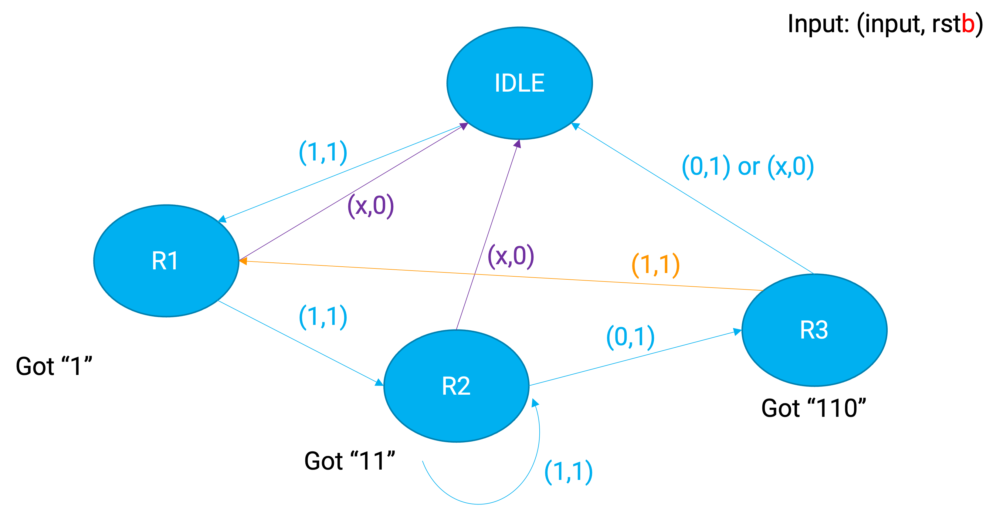
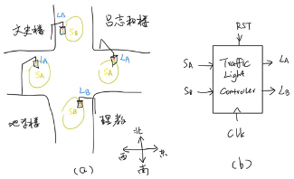

实验4、有限状态机
教程
FSM Template 【link】
有一个经典的有限状态机的例子被称为“电气蜗牛”：即“电气蜗牛”会在由“1”和“0”的数字信号上爬动，每当它连续走过“110”的时候它就会叫一声，请写出“电气蜗牛”的有限状态机Verilog代码。
首先画出状态转移图： 
如以下的程序1所示，“电气蜗牛”其实就是一个密码检测器，每当连续检测到“110”（特定）码字的时候，输出一个“1”，否则输出“0”。
程序1:
module PasscodeDetector(
input clk, data_in, rstb,
output reg data_out
)
reg [1:0] state;
parameter STAT_IDLE = 0,
STATE_R1 = 1,
STATE_R2 = 2,
STATE_R3 = 3;
always @(state) begin
if(state==STATE_R3)
data_out <= 1;
else
data_out <= 0;
end
always @(posedge clk or negedge rstb) begin
if(!rstb)
state <= STAT_IDLE;
else
case(state)
STAT_IDLE:
if(data_in==1)
state <= STATE_R1;
STATE_R1:
if(data_in==1)
state <= STATE_R2;
else
state <= STAT_IDLE;
STATE_R2:
if(data_in==0)
state <= STATE_R3;
else
state <= STATE_IDLE;
default://STATE_R3
if(data_in==1)
state <= STATE_R1;
else
state <= STATE_IDLE;
endcase
end
endmodule
练习
1. 验证“电气蜗牛”
Note
[问题1] 请写一个testbench，用vivado或者iverilog验证“电气蜗牛”代码，实验报告中请截图仿真波形图。
2、交通灯设计
理教旁边的十字路口实在需要一个交通灯啦！你现在要帮忙设计一个路口的交通灯，示意图如下。

CLK周期5s，RST为high active reset，SA和SB为安装的传感器，比如SA（东西向）探测到有人的话，会输出一个1，然后东西向就需要变绿灯通行。如果SA和SB都有人，那就需要你对红黄绿灯转换时间的设计（需以5s为最低时间单位）啦。
Note
[问题2]
2.1: 画出state-transfer diagram
2.2: 完成基于FSM的TrafficLightController module。
2.3: 写一个testbench测试证明Q2中的code是对的，结果时序图请截图提交。
Note
[问题3] 现在我们扩展探究上面的控制器的管理效果。请设计一款模拟器，在不同时间随机生成车辆（提示：可利用Verilog的$random函数），模拟测试上述。求平均等待车辆数。